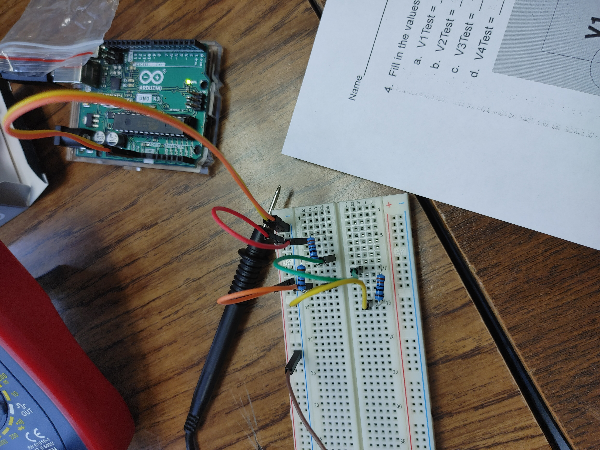
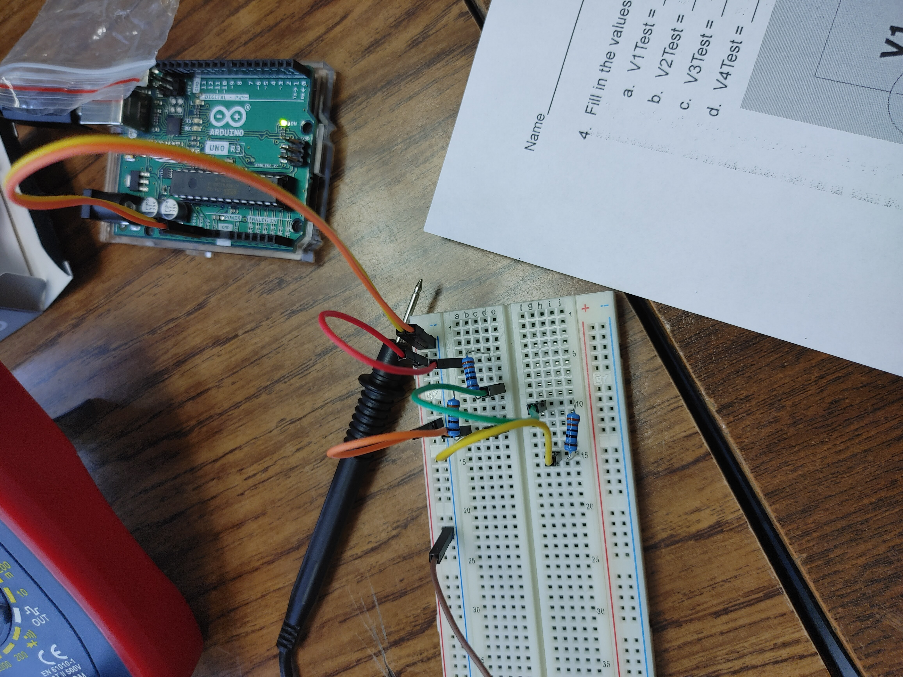

Week 2:
On monday we started learning about machanical engineering. It has a lot of variations and I was really exited since this is the field I want to major in. Later on we learned about safety when working. On wednesday we started a project. We have to use three basic machanics in order to have a baseball pop a balloon. We will mainly be using cardbord for this project. We started designing our ideas on tinkercad. And lastely, today, friday, we took a 10 minute quiz on safety and did a challenge. We got to pick an object and design it on tinkercad. I am not a big fan of 3D design but this was still fun.
Week 3:
This week we did not do much. We made sure that the websites worked and on Friday we learned how to properly use a ruler. We had to design an E with detailed dimentions writen and give those instructions to a partner who gave us their instructions. Then, we had to cut out the E as close to the dimentions as possible. It was an easy week so there is not much to write about.
Week 4:
On monday, we got into groups of four and sketched our balloon projects on a peace of cardbord. It did not take long for my group to sketch so we were able to have fun and bond a little. The next class, wednesday, we started cutting out and taping our projects. Lets just say that everyone in my group, incuding me, is sloppy. It took a lot of attempts to get the pully to be strait. We were told that we would continue this on Friday so I took thick string with me to school and some one else brought a toy car. We ended up not continuing the project and did a challenge instead. This challenge was to make a paper boat that would stay up with weights. My group failed and our boat sank in less than a second. It was really fun but I am starting to question my engineering abilities.
Week 5:
This week we continued working on our projects. My group needed some extra materials so I brought thick string and someone else brought a toy car. It was a very nice car. On wednesday we had to take the map test but the internet went down, as expected, so we continues working on our projects. My group got to test and we passed on the first try! Also, some kid that was not even from our class just came in while wearing cardboard. Overall, very fun week!
Week 6:
We started learning about computer engineering. I was very surprized to realize that I had a strong interest in this field. Mr. Poole's friend gave us a presentation and it was very interesting. After the presentation, we got into groups and started disecting a laptop. My group took a while so we had to continue on friday. It was so intersting and fun! I really enjoyed it. We struggled a bit when putting everything back together but we somehow managed.
Week7:
This week was bioengineering week. Personally, I hate biology and had very low expectations for this field of engineering. On monday, we were given a presentation on the topic and as time passed, I realized that bioengineering is actually very interesting. The idea of improving society by taking ideas from natural evolution really intrigued me. On wednesday, we were told to design a prostetic for an animal of our choice and an injury of our choice. I chose to work on a hedgehog with no hind legs. I used a simillar structure that was used on cats and dogs with a similar trauma. We had to make sure that the metirials would last long enough to actually be usefull so we had to research different materials. It was very fun but because I do not really enjoy biology, I will most likely not major in this branch of engineering.
Week 8:
This week was aerospace engineering week. This is the field I want to go into so the slides were very interesting to me. Our project is to build a rocket so I got very exited but later found out that we will basically be making a plane since it will be flying horizontally. I was very disappointed since I actually do not like the idea of making planes. We started designing and I realized that I like to build instead of design. For the weekly challenge we had to make a flying paper that would touch a bin when throughn from the 2nd floor. I just made a paper plane but the people that got good results had crunpled their paper into a ball.
Week 9:
This week we continued working on our rocket plains. This time we got to building and testing. I built the nozzle and back while my teammates built the wings. I would like to think we did a good job considering the time we had. On friday we started testing... no one's rocket really worked. Our rocket did three flips and went strait to the floor. I really enjoyed building the rocket and had fun with the project.
Week 10:
We learned about environmental engineering. It was very interesting. They basically clean up the mess that the other engineers make. We also did a challenge. We had to predict how many candy corns would fit on a piece of paper. My group made an educational guess of 188. The answer was 226 I think. We also tried to filter water using rocks, sand, and tissue. My group's water was the second cleanest.
Week 11:
We learned about electrical engineering. Electrical is one of my favorite branches of engineering. I love the diagrams and the math involved. We used Tinkedcad to make some breadboards. I made a small mistake with the grounding but I was able to fix it right away. Calculating the resistance is like a fun puzzle, I loved it. Electrical might have become a beckup major for me.
Week 12:
We continued our lesson on electrical engineering. We used breadboards to make different cercuits like parallel, series, and even using a button. Me and my partner did very well with close to no mistakes. The only mistake that was made was with the button. At first we put the button wrong but after rotationg the butoon 90 degrees clockwise, our cercuit worked. We also did a challenge where we had to calculate what took less time, taking a 50 minute math class for 180 days or counting to a million. I did the ath and chose taking the math class which was the correct answer.
 


Week 13:
We continued working on electrical engineering. This time, we learned how to code the pattern of the light. It was very interesting to try different patterns and get creative. For the challenge of the week we had to debate weather there are more wheeles or doors in the school. I was put on the side of doors. I tried prooving that books can count as doors and even ran to the library to find out how many books there are. My group won and I got a kitkat.
Week 1:
This was the first week back. On monday we took it easy and after talking about our break, we played a kahoot that summerized what we learded about last semester. Afterwords we play the game where you have to guess the noun that was put on your forehead. The next two days we learned about buisness engineering. We had to come up with an idea of a product and present it to the class like in Shark Tank. My group decided to work on a website for students taking high math classes. We named it the Mathinator and I think we did a great job.
Week 2:
This week, on wednesday, we finshed up with the presentations from last weeks buisness engineering lesson. After that we talked about chemical engineering. Chemical engineering is very broad and can be found anywhere. On friday, we made oobleck. Oobleck is a substance made out of corn starch and water (2:1). Oobleck is a solding when a lot of force is applyed and liquid when at rest. Me and my partner did great and we were told that our work was perfect.
Week 3-8:
We had to choose a project to work on. Me and Linnea decided to work together. I wanted to do the arduino while she wanted to do the research project. That is why decided on a middle ground, the mousetrap car. We were given all of wednesday and friday to write a proposal. The proposal has to be a 5 page report where we have to do a lot of research on the mousetrap car. It was acctually very interesting doing my own research. I learned a lot and it made me realize that I do not need someone to teach me something, I can just learn it myself.
As we continued working on our mousetrap cars we finished working on our proposels. We were told to perfect it before turning it in. We also had to turn in our Bill of Materials. We had to make 3D models of our design with measurements. We still had a lot to work on since some metirials were missing but we were still on track with out set goals. We already had a good idea of what we are doing.
After getting our materials, we finally started properly working on our mousetrap car. We built the body using cardbord and used straws and wooden sticks as an axil for the wheels. The wheels were made of disks and covered in duchtape for additional grip. We will be adding the actual mousetrap next week. We tried just rolling and it went forward very smoothly. Durring the fist few days of building, it seemed like we were making incredable progress. But then we attached the mousetrap to the car. This is when we realized that the wheels were not straight. We had to redo all of the wheels. Even after this our car still would not work and would stop half way. It took us awhile but we were able to fix it. The wire would get stuck in the straw but we fixed it by adding hot glue to the wooden stick. Now our car oes very far and was used as an example for others who were struggling with their projects. In general I am very happy with how our project turned out and we were told that we did good. Even though out car was a bit slow, it still went far.
Week 9:
We had to make a boat that would go the furthest. We had to make sure that the boat would float and fit in the canal. That was the first problem, the second issue is how would it travel. Our group decided to put a straw and sticks at the bottom of a paper. On the bottom of that paper we added a sideways cup with a balloon inside. The plan was to let go of the balloon and the air comming out would push it forward. It was not as good as we thought it would be but our boat still did well and we got 4ft and 4in.

Week 10:
We started working on a project where we have to drop an egg from the second floor without it cracking. We had to fist creath our own sketch of the design. We later shared with our grought and settled on a design. After this we made a list of materials we will need. We also created a tinkercad model of design all together. We were told to focus a lot of the measurements since we will be graded on the accuracy.
Week 11:
We made sure to perfect our tinkercad designs and add any details that we might have forgotten about. We also double-checked our list of materials before starting to build. Our group made a box with balloons inside. We wrapped the egg in cotton and paper and put it in a ziploc bag. At last, we closed up the bag and added a parachute. We tested our egg and it survived.
Week 12:
We started talking about our final project. It is going to be a big boat that two of us have to sit in and go in the pool with. I am so excited for this and so is everyone else. For now we just made a sketch and a tinkercad model of our boat. We had to make sure that the measurements are properly accounted for so that our boat does not sink. We also did a challenge with sticky notes. We had to build a bridge out of sticky notes and predict the length. Our guess was off by 6cm.

Week 13:
This week we were finally able to start working on our projects. On wednesday we were given cardboard but there were no box cutters. We were told to measure everything and that was exactly what my group did. After that we thought of trying to cut our pieces out using scissors but decided not to since the lines would end up messy. Onfriday we finally got box cutters but no ducktape. My group was able to cut everything out neatly and since we finished a bit early, we also added a small decorated flag with our names on it.
Week 14:
We had been working on our boats for a while and we have most of our parts cut out. We still have not reseaved any tape but we were told to make prototypes instead. We were allowed to use tape for these prototypes and we tested them in the pool. My groupe made two prototypes and both of them failed. We made one tiny one and one a bit bigger. I think they had a small opening in them so we will need to be carefull about that in the future.
Week 15:
We still don't have our rolld of tape but we were told that we will receave them next week. Instead we were given a roll or two of tape to shape with the class. Using this we were able to slowly build our boat. We got the sides to stand up and started working on the paddles. For the paddle we desided to change the design a bit to make it more sturdy. Because we changed the design that also means that we will need to go back to tinker cad and update our 3d models.
Week 16:
We were finally given tape this week. We started properly building our boat but due to AP exams, we all had to work inside the classroom. This was a huge challenge and we even had to stack our desks to have more working space. We barely had space to move aroud. Even with this challenge we mangaged to make progress but the next day, when we checked our boat, we realized that the tape was not good and was pealing off. We decided to keep the rest of our tape unused in case of an emergancy on the testing day. Instead we tried to find a different way to keep our boat together. We even found a way to expand out surface area. Before we could work on the surface area the class ended so we will leave that for next week.
Week 17:
We were finally able to make a bit of an improvemnt on the boat. We added 'wings' at the bottom of the boat go expand the surface area. The larger the surface area is, the more weight a boat can carry. we did not want to use tape for this since we might need the tape fot an emergancy in the fure. This is why we had to find a different way to stablize the wings. I cut a slit on the cardboard and attached it to the boat. This actually made the boat very stable. On Friday, I was absent but I was told that for our challenge, we had to make a rollercoaster out of paper. the rollercoaster has to have at least two loops. Either two upsidedown or one upsidedown and one sideways.

Week 18:
Since we are basically done with our boat, we decided to focus on the rollercoasters instead. Last week we were having a lot o trouble. We had 2 upside down loops and we could not even mangage to work the first loop. I decided to make our first loop sideways and it actually worked. Now the second loop. The second loop had to be upside down but we just could not make it work. We decided to make our rollercoaster taller and add more dictance between the two loops. It actually worked this time and we even added a little basket at the end to catch our marble. We showed our project but were told that it was too simple and if we do not make it more complicated we will get an 18/20. I decided to add a little pole with a loope around it at the top of the rollercoaster and we ended up getting a 20/20.
Week 19:
We keep on gettig more and more projects to work on. After getting an A on the rollar coster project, we were given a new project. I have seen this project before on social media. We were supposed to make a book stand so that no matter how much you hit the book, it won't fall. We were shown videos of other people's work to see as an exaple of what works and what does not. We also got a new team mate which was weird but fun. I noticed that the book stands with longer beems usually worked so we went with that. Our project worked on the first try! We were told that we would be getting separate grades so I am not sure how that will work out. We also got to work on our boat a bit more. Instead of adding to the boat, we decided to fix our tinker cad since we did change our boat a lot.